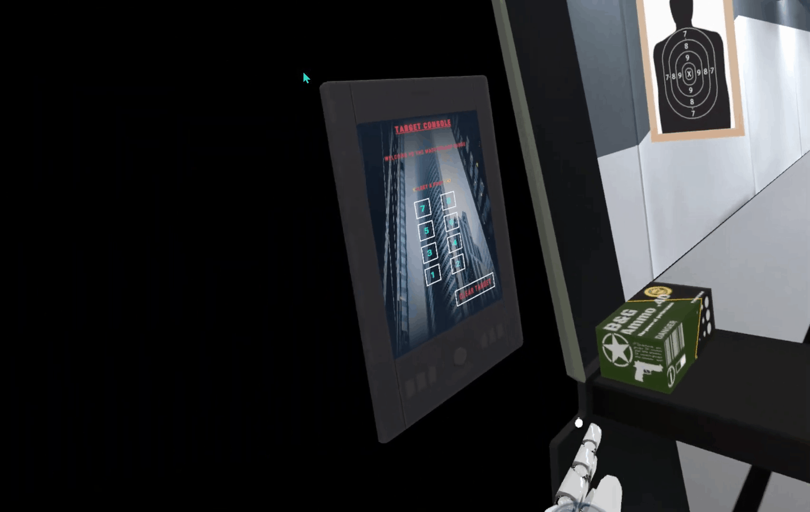
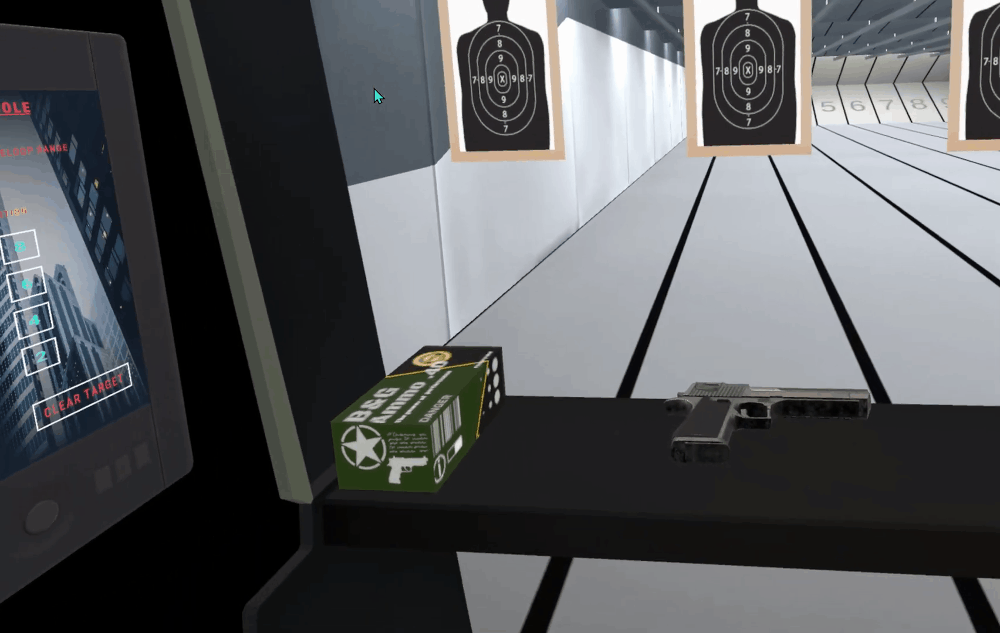

Focus
Responsive control loop
The project focuses on grab interactions, UI behavior, and animation systems that make the range feel immediate and readable.
VR Interaction Project
Gun Range is a VR interaction project built around responsive object handling, interface control, and animation. The experience focuses on fast user feedback, control clarity, and interaction flow inside a target practice environment.
Focus
The project focuses on grab interactions, UI behavior, and animation systems that make the range feel immediate and readable.
Outcome
Users get a more convincing sense of control through immediate visual and interaction feedback tied closely to their actions.
Project Media


